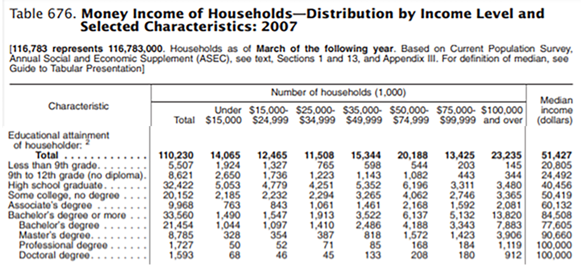
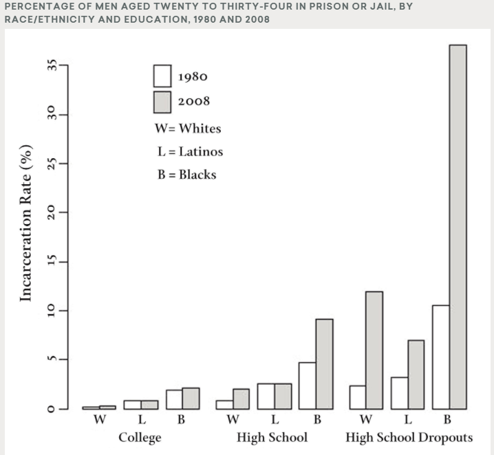

Education
Education is a way to achieve a better life. However, children who live in poverty do not receive the same educational experiences or have access to the same educational advantages as their non-poor peers. Schools located in poor neighborhoods do not have the funds to provide quality materials and educators for their students. These factors lead to the children receiving a less than adequate education, usually ending with the majority of them never completing high school. This is the first link in the cycle of poverty. Because of their lack of education, they cannot compete in the job market, causing them to settle for low-paying work or not able to secure a job. Such factors lead them to a life of crime and incarceration, leaving their families (if they have one) to fend for themselves (HuffPost).

Source: Statistical Abstract of the United States:2010, U.S. Census Bureau.
Photo has been edited for size purposes.
Research shows income is greatly influenced by the level of education achieved. As indicated by the table above, a household where the education level of the head of the house was less than 9th grade earned around $20,805, households with a high school graduate head of house earned $40,456, households with a bachelor’s degree earned $77,605, and households headed by a person with a professional degree earned $100,000 or more (U.S. Census Bureau). Research also shows that those with higher levels of education have less of a probability of going to prison.

Source: Becky Pettit, Bryan Sykes, and Bruce Western.
"Technical Report on Revised Population Estimates and NLSY79 Analysis
Tables for the Pew Public Safety and Mobility Project" (Harvard University, 2009).